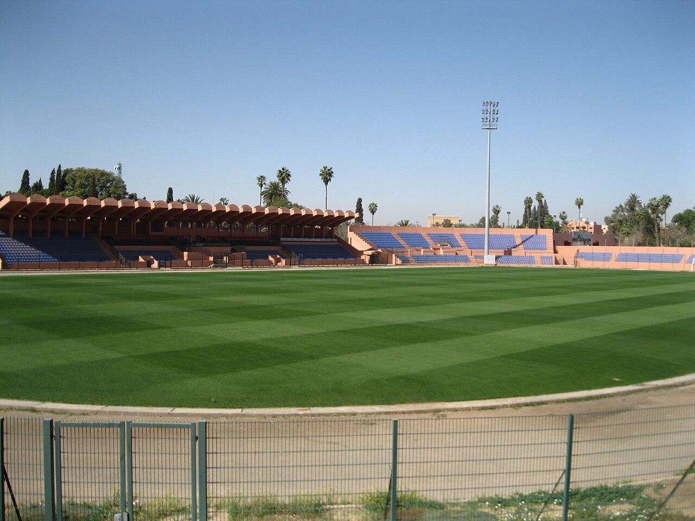

Conçu par Sâd Benkirane et Gregotti Associati International, le Grand Stade a été inauguré le 5 janvier 2011. Sa pelouse naturelle s’étend sur un site de 58 hectares. Sa capacité totale de 45 240 places comprend 36 300 places couvertes, ainsi que des tribunes officielles, des espaces dédiés à la presse et des places pour les personnes à mobilité réduite.
Le stade est géré par la SONARGES. Les matchs d’ouverture, le 5 janvier 2011, opposaient le Wydad à Paris Saint-Germain (1–1) et le Kawkab à l’Olympique Lyonnais (0–0).
Le Grand Stade a accueilli des rendez-vous majeurs :
Coupe du monde des clubs de la FIFA 2013 (finale remportée par le Bayern Munich) et 2014 (finale remportée par le Real Madrid).
Championnat d’Afrique des nations 2018, remporté par le Maroc.
Plusieurs matchs de qualification pour la Coupe d’Afrique des nations, puis la CAN 2025, dont un quart de finale le 10 janvier 2026.
Championnats d’Afrique d’athlétisme 2014 et Coupe continentale d’athlétisme 2014.

El Harti, la maison historique
Avant le Grand Stade, le Kawkab a joué à El Harti depuis sa fondation jusqu’en décembre 2010. Construit dans les années 1930 dans le quartier du Harti, entre Guéliz et l’Hivernage, ce stade de 10 000 places est resté au cœur de la mémoire du club : c’est notamment le théâtre de la victoire 2–0 au retour de la finale de la Coupe de la CAF 1996.
Rouvert en septembre 2018 après des travaux de 50 millions de dirhams, il a reçu une pelouse naturelle, un nouvel éclairage et de nouveaux sièges. Il a accueilli en 1979 la Coupe intercontinentale Mohammed V et en 1989 la Coupe arabe des clubs champions.